Contents
Setup
Ts = 0.3e-3;
fs = 1 / Ts;
sig = DTMFdial('159D*286A', fs);
plotspec(sig, fs, 256);
xlabel('Time (s)');
ylabel('Frequency (Hz)');
title('Unfiltered Signal');
freqs = [697, 770, 852, 941, 1209, 1336, 1477, 1633];
df = 6;
dp = 0.02;
ds = 0.01;
ww = -pi : pi / 1000 : pi;
ff = linspace(-1 / 2 * fs, 1 / 2 * fs, length(ww));
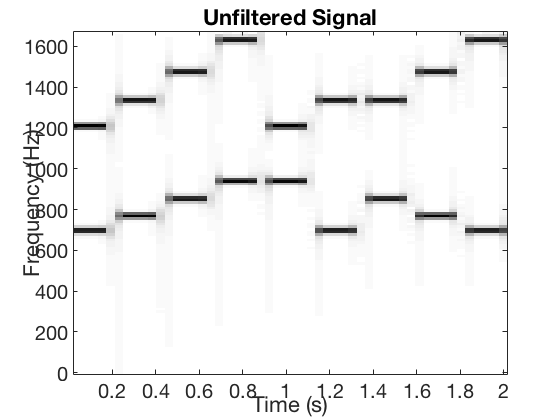
Filter #1
f1 = [624, freqs(1) - df, freqs(1) + df, freqs(2)];
c1 = firpmord(f1, [0, 1, 0], [ds, dp, ds], fs, 'cell');
m1P = c1{1};
m1A = m1P - 7;
delay1 = 1 / 2 * m1A;
b1 = conv([zeros(1, delay1), 1], firpm(m1A, c1{2 : end}));
H1 = freqz(b1, 1, ww);
figure;
plot(ff, abs(H1));
xlabel('Frequency (Hz)');
ylabel('|H|');
title('Frequency Response (#1)');
grid on;
figure;
plotspec(conv(sig, b1), fs, 256);
xlabel('Time (s)');
ylabel('Frequency (Hz)');
title('Filtered Signal (#1)');
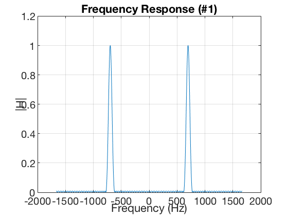 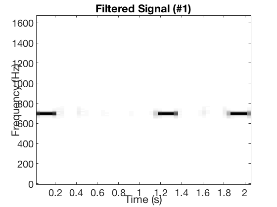
Filter #2
f2 = [freqs(1), freqs(2) - df, freqs(2) + df, freqs(3)];
c2 = firpmord(f2, [0, 1, 0], [ds, dp, ds], fs, 'cell');
m2P = c2{1};
m2A = m2P - 11;
delay2 = 1 / 2 * m2A;
b2 = conv([zeros(1, delay2), 1], firpm(m2A, c2{2 : end}));
H2 = freqz(b2, 1, ww);
figure;
plot(ff, abs(H2));
xlabel('Frequency (Hz)');
ylabel('|H|');
title('Frequency Response (#2)');
grid on;
figure;
plotspec(conv(sig, b2), fs, 256);
xlabel('Time (s)');
ylabel('Frequency (Hz)');
title('Filtered Signal (#2)');
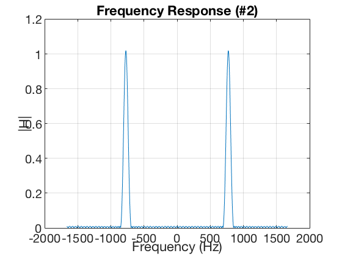 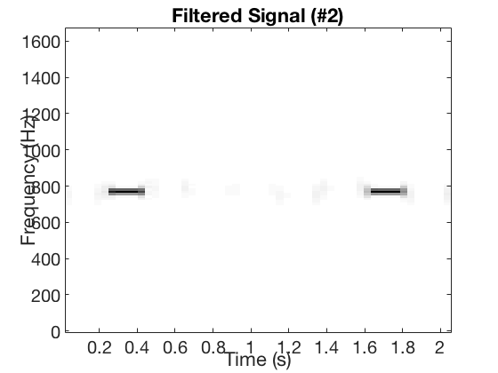
Filter #3
f3 = [freqs(2), freqs(3) - df, freqs(3) + df, freqs(4)];
c3 = firpmord(f3, [0, 1, 0], [ds, dp, ds], fs, 'cell');
m3P = c3{1};
m3A = m3P - 10;
delay3 = 1 / 2 * m3A;
b3 = conv([zeros(1, delay3), 1], firpm(m3A, c3{2 : end}));
H3 = freqz(b3, 1, ww);
figure;
plot(ff, abs(H3));
xlabel('Frequency (Hz)');
ylabel('|H|');
title('Frequency Response (#3)');
grid on;
figure;
plotspec(conv(sig, b3), fs, 256);
xlabel('Time (s)');
ylabel('Frequency (Hz)');
title('Filtered Signal (#3)');
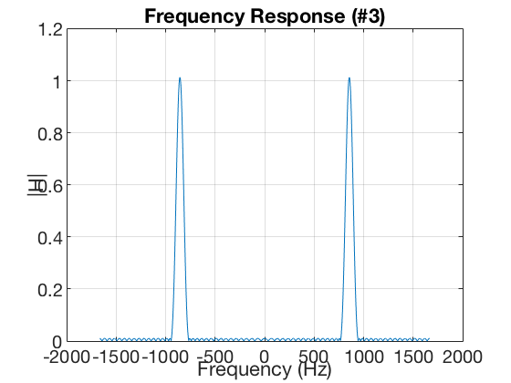 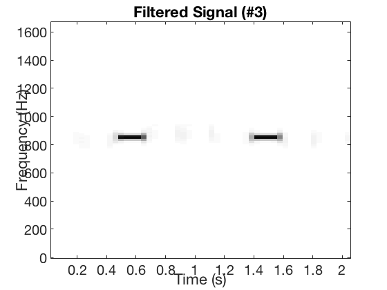
Filter #4
f4 = [freqs(3), freqs(4) - df, freqs(4) + df, 1030];
c4 = firpmord(f4, [0, 1, 0], [ds, dp, ds], fs, 'cell');
m4P = c4{1};
m4A = m4P - 6;
delay4 = 1 / 2 * m4A;
b4 = conv([zeros(1, delay4), 1], firpm(m4A, c4{2 : end}));
H4 = freqz(b4, 1, ww);
figure;
plot(ff, abs(H4));
xlabel('Frequency (Hz)');
ylabel('|H|');
title('Frequency Response (#4)');
grid on;
figure;
plotspec(conv(sig, b4), fs, 256);
xlabel('Time (s)');
ylabel('Frequency (Hz)');
title('Filtered Signal (#4)');
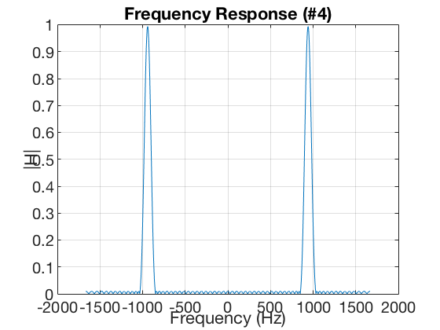 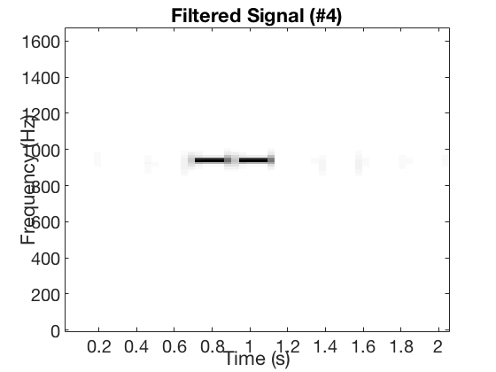
Filter #5
f5 = [1082, freqs(5) - df, freqs(5) + df, freqs(6)];
c5 = firpmord(f5, [0, 1, 0], [ds, dp, ds], fs, 'cell');
m5P = c5{1};
m5A = m5P - 4;
delay5 = 1 / 2 * m5A;
b5 = conv([zeros(1, delay5), 1], firpm(m5A, c5{2 : end}));
H5 = freqz(b5, 1, ww);
figure;
plot(ff, abs(H5));
xlabel('Frequency (Hz)');
ylabel('|H|');
title('Frequency Response (#5)');
grid on;
figure;
plotspec(conv(sig, b5), fs, 256);
xlabel('Time (s)');
ylabel('Frequency (Hz)');
title('Filtered Signal (#5)');
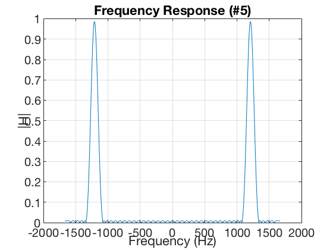 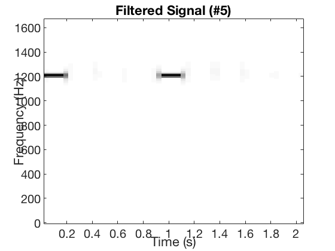
Filter #6
f6 = [freqs(5), freqs(6) - df, freqs(6) + df, freqs(7)];
c6 = firpmord(f6, [0, 1, 0], [ds, dp, ds], fs, 'cell');
m6P = c6{1};
m6A = m6P - 6;
delay6 = 1 / 2 * m6A;
b6 = conv([zeros(1, delay6), 1], firpm(m6A, c6{2 : end}));
H6 = freqz(b6, 1, ww);
figure;
plot(ff, abs(H6));
xlabel('Frequency (Hz)');
ylabel('|H|');
title('Frequency Response (#6)');
grid on;
figure;
plotspec(conv(sig, b6), fs, 256);
xlabel('Time (s)');
ylabel('Frequency (Hz)');
title('Filtered Signal (#6)');
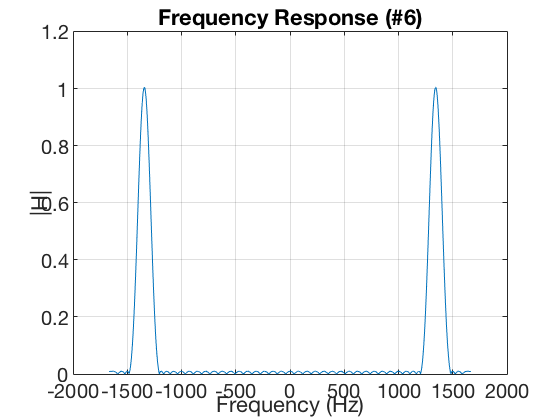 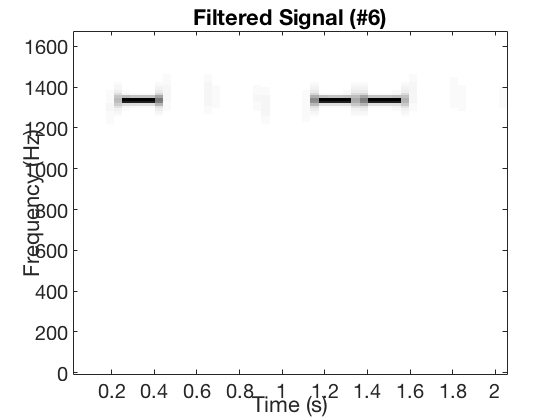
Filter #7
f7 = [freqs(6), freqs(7) - df, freqs(7) + df, freqs(8)];
c7 = firpmord(f7, [0, 1, 0], [ds, dp, ds], fs, 'cell');
m7P = c7{1};
m7A = m7P - 3;
delay7 = 1 / 2 * m7A;
b7 = conv([zeros(1, delay7), 1], firpm(m7A, c7{2 : end}));
H7 = freqz(b7, 1, ww);
figure;
plot(ff, abs(H7));
xlabel('Frequency (Hz)');
ylabel('|H|');
title('Frequency Response (#7)');
grid on;
figure;
plotspec(conv(sig, b7), fs, 256);
xlabel('Time (s)');
ylabel('Frequency (Hz)');
title('Filtered Signal (#7)');
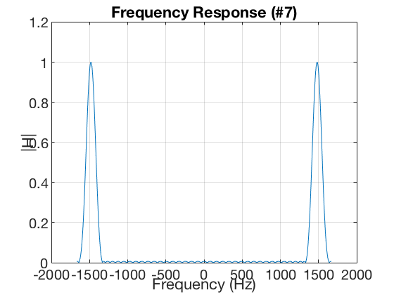 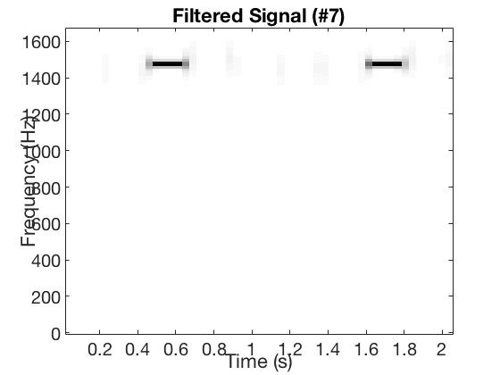
Filter #8
f8 = [freqs(7), freqs(8) - df];
c8 = firpmord(f8, [0, 1], [ds, dp], fs, 'cell');
m8P = c8{1};
m8A = m8P + 6;
delay8 = 1 / 2 * m8A;
b8 = conv([zeros(1, delay8), 1], firpm(m8A, c8{2 : end}));
H8 = freqz(b8, 1, ww);
figure;
plot(ff, abs(H8));
xlabel('Frequency (Hz)');
ylabel('|H|');
title('Frequency Response (#8)');
grid on;
figure;
plotspec(conv(sig, b8), fs, 256);
xlabel('Time (s)');
ylabel('Frequency (Hz)');
title('Filtered Signal (#8)');
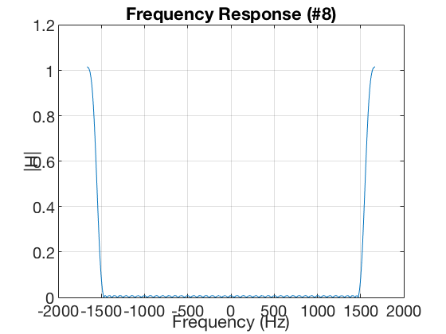 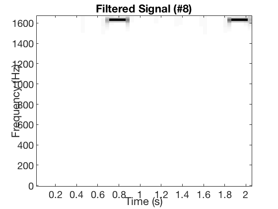
Decoding
sig1 = conv(sig, b1);
sig2 = conv(sig, b2);
sig3 = conv(sig, b3);
sig4 = conv(sig, b4);
sig5 = conv(sig, b5);
sig6 = conv(sig, b6);
sig7 = conv(sig, b7);
sig8 = conv(sig, b8);
maxLength = max([length(sig1), length(sig2), length(sig3), length(sig4), length(sig5), length(sig6), length(sig7), length(sig8)]);
sig1 = [sig1, zeros(1, maxLength - length(sig1))];
sig2 = [sig2, zeros(1, maxLength - length(sig2))];
sig3 = [sig3, zeros(1, maxLength - length(sig3))];
sig4 = [sig4, zeros(1, maxLength - length(sig4))];
sig5 = [sig5, zeros(1, maxLength - length(sig5))];
sig6 = [sig6, zeros(1, maxLength - length(sig6))];
sig7 = [sig7, zeros(1, maxLength - length(sig7))];
sig8 = [sig8, zeros(1, maxLength - length(sig8))];
R = 25;
X = [sig1', sig2', sig3', sig4', sig5', sig6', sig7', sig8'];
AvgPower = X .^ 2;
downSampled = AvgPower(1 : R : end, :);
strips(downSampled);
title('strips(downSampled)');
phoneNumber = decodeDTMF(downSampled, fs, R)
phoneNumber =
'159D*286A'
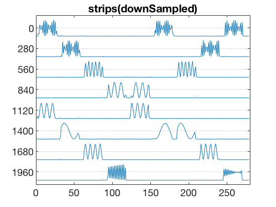